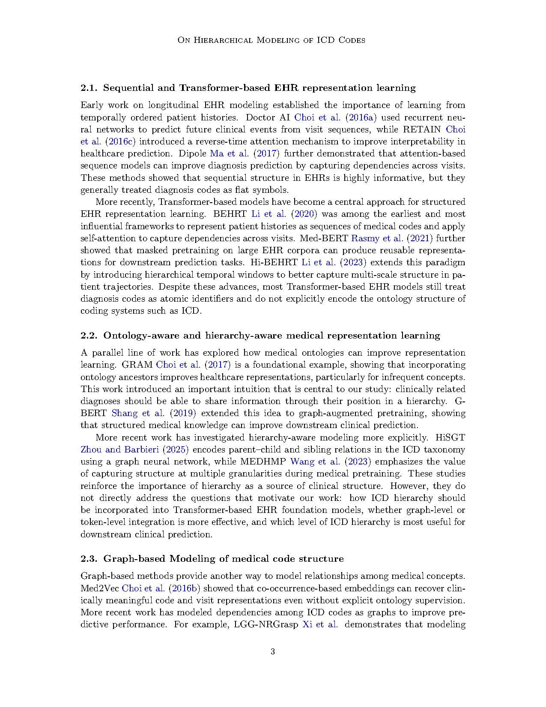
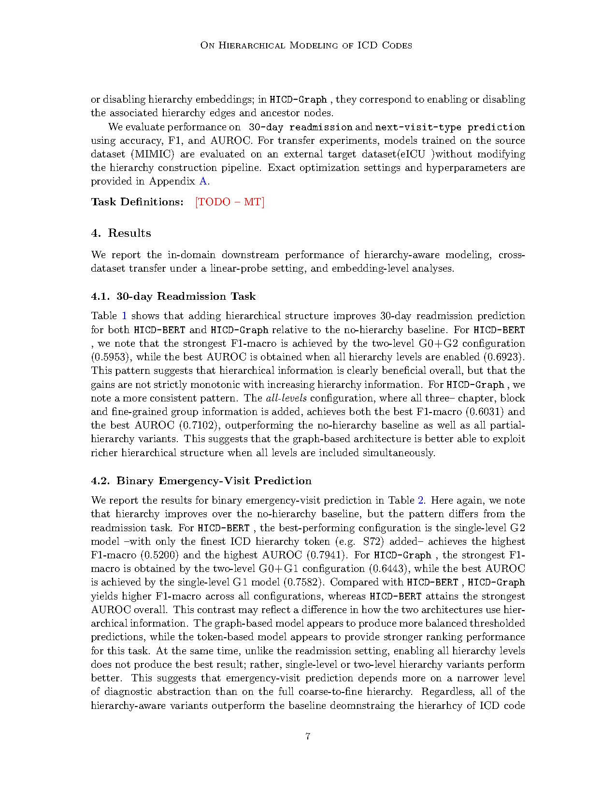

assets/hicd_fig.jpg to populate this slot.We study ICD hierarchy as a general inductive bias for clinical representation learning. Two complementary mechanisms are proposed. HICD-BERT augments diagnosis sequences in a BERT-style transformer with additional tokens that correspond to different levels of the ICD hierarchy, exposing the encoder to broad disease families as well as fine-grained codes. HICD-Graph injects hierarchy directly into graph-based code representations through hierarchy-aware edges that complement the diagnosis co-occurrence structure.
We perform an ablation study over broad, intermediate, and fine hierarchy levels, evaluate cross-dataset transfer to assess robustness under domain shift, and analyse the embedding space to ask whether incorporating hierarchy results in more cohesive clustering of clinically similar codes. Across these settings, explicit hierarchy improves over flat code representations both in-domain and across datasets, while also reshaping embedding similarity structure in clinically meaningful ways. The most useful level of the hierarchy depends on both the downstream task and the modeling approach.
EHR foundation models are increasingly applied across institutions where the precise mix of ICD codes shifts. Encoding hierarchy as an inductive bias gives rare or shifted codes a backbone of related, clinically plausible neighbors, which is exactly the kind of structure that should help robustness under domain shift.

@inproceedings{hicd2025,
title = {On Hierarchical Modeling of ICD Codes for EHR Foundation Models},
author = {Lastname, Firstname and Thukral, Megha and others},
booktitle= {Submitted to Machine Learning for Healthcare (MLHC)},
year = {2025}
}